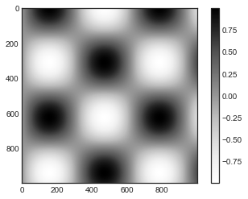
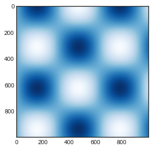
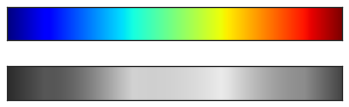
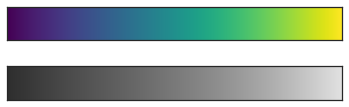
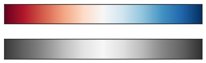
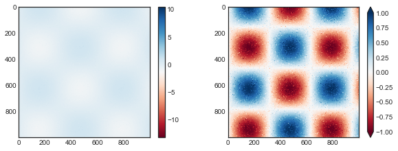
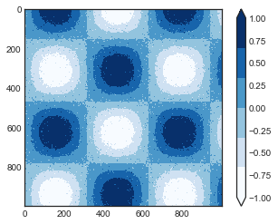
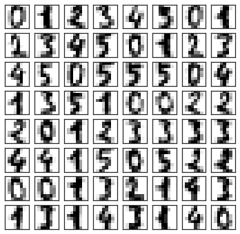
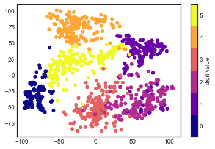

import matplotlib.pyplot as plt
plt.style.use('seaborn-white')컬러바 사용자 정의
플롯 범례는 개별 지점의 개별 레이블을 식별합니다. 점, 선 또는 영역의 색상을 기반으로 하는 연속 레이블의 경우 레이블이 지정된 컬러바가 훌륭한 도구가 될 수 있습니다. Matplotlib에서 컬러바는 플롯의 색상 의미에 대한 키를 제공할 수 있는 별도의 축으로 그려집니다. 책이 흑백으로 인쇄되어 있기 때문에 이 장에는 그림을 풀 컬러로 볼 수 있는 온라인 보충 자료가 함께 제공됩니다. 우리가 사용할 함수를 플로팅하고 가져오기 위해 노트북을 설정하는 것부터 시작하겠습니다.
%matplotlib inline
import numpy as np이미 여러 번 살펴보았듯이 plt.colorbar 함수를 사용하면 가장 간단한 컬러바를 만들 수 있습니다(다음 그림 참조).
x = np.linspace(0, 10, 1000)
I = np.sin(x) * np.cos(x[:, np.newaxis])
plt.imshow(I)
plt.colorbar();
이제 이러한 컬러바를 사용자 정의하고 다양한 상황에서 효과적으로 사용하기 위한 몇 가지 아이디어에 대해 논의하겠습니다.
컬러바 사용자 정의
시각화를 생성하는 플로팅 함수에 대한 ‘cmap’ 인수를 사용하여 컬러맵을 지정할 수 있습니다(다음 그림 참조).
plt.imshow(I, cmap='Blues');
사용 가능한 컬러맵의 이름은 plt.cm 네임스페이스에 있습니다. IPython의 탭 완성 기능을 사용하면 내장된 가능성의 전체 목록이 제공됩니다.
plt.cm.<TAB>그러나 컬러맵을 선택할 수 있다는 것은 첫 번째 단계일 뿐입니다. 더 중요한 것은 가능성 중에서 결정하는 방법입니다! 선택은 처음에 예상했던 것보다 훨씬 더 미묘하다는 것이 밝혀졌습니다.
컬러맵 선택
시각화 내에서 색상 선택에 대한 전체적인 처리는 이 책의 범위를 벗어납니다. 그러나 이 주제와 다른 주제에 대한 재미있는 독서를 위해 Nicholas Rougier, Michael Droettboom 및 Philip Bourne이 쓴 “더 나은 그림을 위한 10가지 간단한 규칙” 기사를 참조하세요. Matplotlib의 온라인 문서에는 컬러맵 선택에 대한 흥미로운 토론도 나와 있습니다.
대체로 세 가지 범주의 컬러맵을 알고 있어야 합니다.
- 순차적 색상맵: 이는 하나의 연속적인 색상 시퀀스로 구성됩니다(예:
binary또는viridis). - 발산 색상맵: 여기에는 일반적으로 평균과의 양수 및 음수 편차를 나타내는 두 가지 고유한 색상이 포함됩니다(예: ‘RdBu’ 또는 ‘PuOr’).
- 정성적 색상맵: 특별한 순서 없이 색상을 혼합합니다(예: ‘무지개’ 또는 ‘제트’).
The jet colormap, which was the default in Matplotlib prior to version 2.0, is an example of a qualitative colormap. 기본값으로서의 상태는 매우 불행했습니다. 정성적 지도는 종종 정량적 데이터를 표현하는 데 적합하지 않은 선택이기 때문입니다. 문제 중에는 질적 지도가 일반적으로 척도가 증가함에 따라 밝기의 균일한 진행을 표시하지 않는다는 사실이 있습니다.
‘jet’ 컬러바를 흑백으로 변환하면 이를 확인할 수 있습니다(다음 그림 참조).
from matplotlib.colors import LinearSegmentedColormap
def grayscale_cmap(cmap):
"""Return a grayscale version of the given colormap"""
cmap = plt.cm.get_cmap(cmap)
colors = cmap(np.arange(cmap.N))
# Convert RGBA to perceived grayscale luminance
# cf. http://alienryderflex.com/hsp.html
RGB_weight = [0.299, 0.587, 0.114]
luminance = np.sqrt(np.dot(colors[:, :3] ** 2, RGB_weight))
colors[:, :3] = luminance[:, np.newaxis]
return LinearSegmentedColormap.from_list(
cmap.name + "_gray", colors, cmap.N)
def view_colormap(cmap):
"""Plot a colormap with its grayscale equivalent"""
cmap = plt.cm.get_cmap(cmap)
colors = cmap(np.arange(cmap.N))
cmap = grayscale_cmap(cmap)
grayscale = cmap(np.arange(cmap.N))
fig, ax = plt.subplots(2, figsize=(6, 2),
subplot_kw=dict(xticks=[], yticks=[]))
ax[0].imshow([colors], extent=[0, 10, 0, 1])
ax[1].imshow([grayscale], extent=[0, 10, 0, 1])view_colormap('jet')
회색조 이미지에서 밝은 줄무늬를 확인하세요. 풀 컬러에서도 이 고르지 못한 밝기는 눈이 색상 범위의 특정 부분에 끌리게 되어 잠재적으로 데이터 세트에서 중요하지 않은 부분을 강조하게 된다는 것을 의미합니다. 범위 전체에 걸쳐 균일한 밝기 변화를 갖도록 특별히 구성된 viridis(Matplotlib 2.0의 기본값)와 같은 컬러맵을 사용하는 것이 더 좋습니다. 따라서 색상 인식과 잘 어울릴 뿐만 아니라 회색조 인쇄에도 잘 변환됩니다(다음 그림 참조).
view_colormap('viridis')
일부 평균과의 양수 및 음수 편차를 표시하는 등의 다른 상황에서는 RdBu(빨간색–파란색)와 같은 이중 색상 컬러바가 도움이 됩니다. 그러나 다음 그림에서 볼 수 있듯이 회색조로 변환하면 긍정적/부정적 정보가 손실된다는 점에 유의하는 것이 중요합니다!
view_colormap('RdBu')
계속 진행하면서 이러한 컬러맵 중 일부를 사용하는 예를 살펴보겠습니다.
Matplotlib에는 수많은 색상맵이 있습니다. 그 목록을 보려면 IPython을 사용하여 plt.cm 하위 모듈을 탐색할 수 있습니다. 파이썬(Python)의 색상에 대한 보다 원칙적인 접근 방식은 Seaborn 라이브러리 내의 도구 및 문서를 참조할 수 있습니다(Visualization With Seaborn 참조).
색상 제한 및 확장
Matplotlib을 사용하면 광범위한 색상 막대 사용자 정의가 가능합니다. 컬러바 자체는 단순히 ‘plt.Axes’의 인스턴스이므로 지금까지 본 모든 축 및 눈금 형식 지정 트릭을 적용할 수 있습니다. 컬러바에는 몇 가지 흥미로운 유연성이 있습니다. 예를 들어 ’extend’ 속성을 설정하여 색상 제한을 좁히고 위쪽과 아래쪽에 삼각형 화살표를 사용하여 범위를 벗어난 값을 표시할 수 있습니다. 예를 들어 노이즈가 있는 이미지를 표시하는 경우 유용할 수 있습니다(다음 그림 참조).
# make noise in 1% of the image pixels
speckles = (np.random.random(I.shape) < 0.01)
I[speckles] = np.random.normal(0, 3, np.count_nonzero(speckles))
plt.figure(figsize=(10, 3.5))
plt.subplot(1, 2, 1)
plt.imshow(I, cmap='RdBu')
plt.colorbar()
plt.subplot(1, 2, 2)
plt.imshow(I, cmap='RdBu')
plt.colorbar(extend='both')
plt.clim(-1, 1)
왼쪽 패널에서 기본 색상 제한은 노이즈가 있는 픽셀에 반응하고 노이즈의 범위로 인해 관심 있는 패턴이 완전히 사라집니다. 오른쪽 패널에서는 색상 제한을 수동으로 설정하고 해당 제한보다 높거나 낮은 값을 나타내는 확장자를 추가합니다. 그 결과 데이터가 훨씬 더 유용하게 시각화되었습니다.
이산 컬러바
컬러맵은 기본적으로 연속형이지만 때로는 이산형 값을 표현하고 싶을 때도 있습니다. 이를 수행하는 가장 쉬운 방법은 plt.cm.get_cmap 함수를 사용하고 원하는 빈 수와 함께 적합한 색상맵의 이름을 전달하는 것입니다(다음 그림 참조).
plt.imshow(I, cmap=plt.cm.get_cmap('Blues', 6))
plt.colorbar(extend='both')
plt.clim(-1, 1);
컬러맵의 이산 버전은 다른 컬러맵과 마찬가지로 사용할 수 있습니다.
예: 손으로 쓴 숫자
이것이 적용될 수 있는 곳에 대한 예로 Scikit-Learn에 포함된 숫자 데이터 세트의 일부 손으로 쓴 숫자에 대한 흥미로운 시각화를 살펴보겠습니다. 이는 다양한 손글씨 숫자를 보여주는 약 2,000개의 \(8 \times 8\) 썸네일로 구성됩니다.
지금은 숫자 데이터세트를 다운로드하고 plt.imshow를 사용하여 여러 예시 이미지를 시각화하는 것부터 시작해 보겠습니다(다음 그림 참조).
# load images of the digits 0 through 5 and visualize several of them
from sklearn.datasets import load_digits
digits = load_digits(n_class=6)
fig, ax = plt.subplots(8, 8, figsize=(6, 6))
for i, axi in enumerate(ax.flat):
axi.imshow(digits.images[i], cmap='binary')
axi.set(xticks=[], yticks=[])
각 숫자는 64픽셀의 색상으로 정의되므로 각 숫자를 64차원 공간에 있는 점으로 간주할 수 있습니다. 각 차원은 한 픽셀의 밝기를 나타냅니다. 이러한 고차원 데이터를 시각화하는 것은 어려울 수 있지만 이 작업에 접근하는 한 가지 방법은 매니폴드 학습과 같은 차원 축소 기술을 사용하여 관심 관계를 유지하면서 데이터의 차원을 줄이는 것입니다. 차원 축소는 비지도 머신러닝의 한 예이며, 머신러닝이란?에서 자세히 논의하겠습니다.
이러한 세부 사항에 대한 논의는 잠시 미루고 숫자 데이터의 2차원 다양체 학습 투영을 살펴보겠습니다(자세한 내용은 심층: 다양체 학습 참조).
# project the digits into 2 dimensions using Isomap
from sklearn.manifold import Isomap
iso = Isomap(n_components=2, n_neighbors=15)
projection = iso.fit_transform(digits.data)이산 컬러맵을 사용하여 결과를 확인하고 ‘ticks’ 및 ’clim’을 설정하여 결과 컬러바의 미적 특성을 개선하겠습니다(다음 그림 참조).
# plot the results
plt.scatter(projection[:, 0], projection[:, 1], lw=0.1,
c=digits.target, cmap=plt.cm.get_cmap('plasma', 6))
plt.colorbar(ticks=range(6), label='digit value')
plt.clim(-0.5, 5.5)
예측은 또한 데이터 세트 내의 관계에 대한 몇 가지 통찰력을 제공합니다. 예를 들어 이 예측에서 2와 3의 범위가 거의 겹쳐서 일부 손으로 쓴 2와 3은 구별하기 어렵고 자동화된 분류 알고리즘에 의해 혼동될 가능성이 더 높음을 나타냅니다. 0과 1과 같은 다른 값은 더 멀리 떨어져 있으므로 혼동될 가능성이 더 낮습니다.
5부에서 다양체 학습 및 숫자 분류로 돌아가겠습니다.